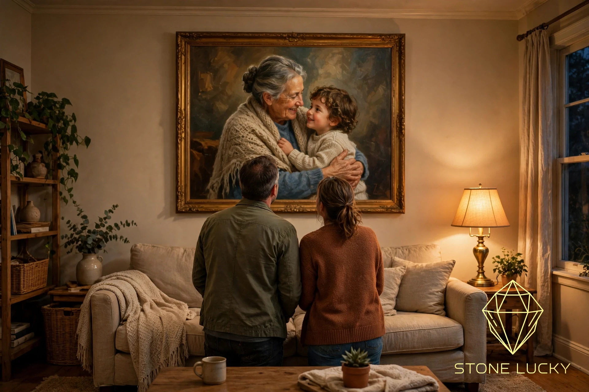

A hand-painted oil painting that costs about ¥700 to produce in China sells for $700 on her independent store — against $2,500–3,000 for the same size from a local US artist. But the price gap is not what made the business work. She burned nearly ¥3 million on ads before she understood: cheap is only a reason to buy, and a customer can defeat it with one sentence — "if I don't buy, I save $700." What finally made orders take off was a positioning she calls "make up for a regret."
The subject of this case is a founder in her 30s, drawn from her own account in a public interview (see the source and verification note at the end regarding her name and company). She studied law (intellectual property), spent over four years in the US from late 2015, and made her first money there with a Chinese-community courier point — shipping parcels back to China at a fraction of local prices — and used cars. After returning to China in 2020, she first sold outdoor products and operated her way to a Best Seller badge in her Amazon category.
Then she walked away from it. That playbook, she judged, was an "open secret" with nothing that compounds. She set herself a rule: only build assets that accumulate — and only two things do: a brand and a private audience. Spending extra early on those two is worth it. Following that rule, she went looking for a category that could carry a brand and had a large price gap.
The most copyable part of her method is the homework before entering. Step one: pin down the transaction scene — where does the customer actually pay? Her answer was her own store, so the main battlefield was Google keywords (SEO/SEM).
Then, using SEMrush, she pulled the top 100 independent stores for the category keyword, skipped marketplaces like Amazon, kept only brand stores, and opened dozens of them one by one: their positioning, who they sell to, site style, naming, brand story, price points, SKU layout. Then she fed the top few back into SEMrush to reverse-engineer their competitors, whether their traffic was paid or organic, roughly what their ads cost, and what creative they ran on each platform.
In her words: "Starting a business is an open-book exam. The answers are already written out there — on Douyin, on TikTok, on independent stores. The only question is whether you're willing to go dig them out and copy them." Before entering, she wants the whole monetization path costed link by link — how much each step takes, what that spend roughly returns — and a minimum viable loop (MVP) proven before scaling. Her diagnosis of most failures is equally direct: people take ¥1 million in capital and try to run a ¥10 million operation, and run dry a tenth of the way in. "Find the trunk first, then grow branches. If the trunk is weak, more branches just make it fall faster."
Getting the category right did not make the business work immediately. Early on, the paintings' ROI was miserable: $3,000 of ad spend, zero orders. Copying competitors' creative playbook and pushing harder produced one or two orders at a time. She was genuinely puzzled: at ¥700 cost against a $700 price, she had $600 of headroom per order for ads — "I thought, with $600, surely I can advertise my way to one painting. Turns out, I couldn't."
Her eventual diagnosis: the problem was not the creative, it was positioning — "whose money am I actually trying to earn?" A custom painting looks like something everyone can buy: paint yourself if you're vain, paint your cat or dog if you're a pet person, paint the couple if you're in love. The result was that nobody bought. As she puts it, plenty of product people intoxicate themselves: "my product is the best in the world, anyone can use it" — and in the end, no one does.
The turnaround came from a slow, manual move. By then she had spent close to ¥3 million of her initial capital and had a few dozen orders, so she audited every single order, one by one. Custom work has a hidden advantage: customers must send the photo and the story behind it. Reading them all, she was stunned — a large share of the orders were the same need: making up for a regret.

The emblematic order: a woman in her 40s wanted a birthday gift for her husband. His mother had died three to five years earlier, before their child was born — his deepest regret was that his mother never met her grandson. She sent photos of her mother-in-law and her son, and asked the studio to paint "grandmother holding her grandson" as one large painting for him.
She rebuilt the advertising around regret — "if there is a regret in your life that can never come true, tell us, and we will paint it for you" — and ROI jumped. Only then came the famous creative grind: a stool pulled up next to the editor, going frame by frame — this shot is wrong, replace it; this part drags, cut it; too slow, speed it up; wrong font, change it; the background music had to be the kind "you can cry just listening to." One day per 20-second video, six days for six videos, then three times the budget to the media buyer. The day they launched, ROI hit 2.9.
Her definition of positioning is worth writing down: positioning is giving the customer a reason they cannot refuse. A plain reason to buy is easy — "a local painting costs you $2,000-plus; mine is $700." Is that a reason to buy? Yes. Is it a reason they can't refuse? No — "I can simply not buy, and save the $700." A regret cannot be saved away. And note the order of operations: positioning first, creative second. With the wrong positioning, the most polished creative in the world still yields an order or two.
She ran the same structure once before, on a different product. She has published seven books, and the one she is proudest of is her first: a TikTok textbook — by her account, the first TikTok book published in China. The Chinese edition sells for a few dozen yuan at home and has sold over 60,000 copies; the English edition, billed as the world's first English-language TikTok textbook, is priced at $199.99 and, she says, sells out every time it is restocked.
Same book, different language, different market: a 20-times price gap. It is the oil-painting structure exactly — something that is cheap in China (a painter's labor, a textbook) becomes, overseas, the ticket in that newcomers cannot route around. Her sharpest skill is not picking products. It is picking market gaps.